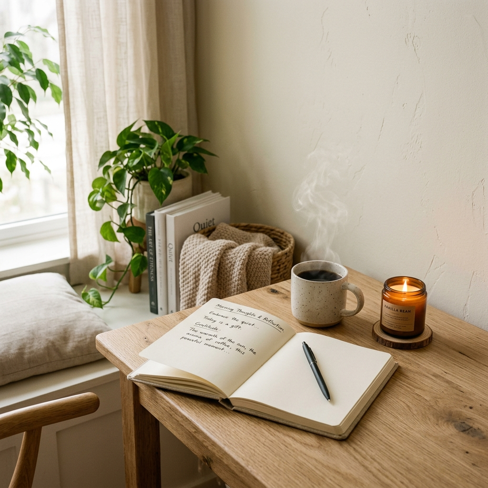

Crea tu ritual interior
Una guía para sentir, explorar y renacer como la mujer que hoy es mamá.
Por Jeca, mamá y mujer en transformación
Introducción
Esta guía está basada en mi experiencia, en los pasos que seguí y me ayudaron a conectar con la mujer en la que me transformé al ser mamá.
Te comparto lo que usé como guía para Sentir, Explorar y Renacer como la mujer que hoy es mamá.
Tómalo como el punto de partida para crear tu propia guía y reconocerte.
Te cuento los pasos que me llevaron a crear un ritual, el que me mantiene en equilibrio interno, incluso cuando las cosas se ponen de cabeza.
Al inicio fueron pequeñas acciones que sostuve en el tiempo de forma repetida para lograr el equilibrio que necesitaba; así nació y se transforma conmigo.
Ahora vos estás creando tu ritual, con tus propias formas para lograr ese equilibrio y reencontrarte contigo, con tu ser.
Mi intención es que vos disfrutes del proceso mientras conectas con tu renacer como Mamuta y exploras tu propia forma de vivir en calma, esa que solo vos podés crear; cuando la encuentres la vas a sentir.
La mejor forma de hacerlo, es la tuya Mamuta.
Bienvenida a tu Ritual interior
Esta guía va a trazar el camino hacia tu exploración interior. Te va a acompañar a crear tu propio ritual, uno que te funcione y necesites para conectar con tu historia, visualizar tu realidad y construir tu propio proceso de transformación.
Esa transformación que te dejó la maternidad cuando pasaste de ser una mujer para convertirte en una mujer que ahora es mamá.
Una MAMUTA con sueños, ideas, ganas de vivir su vida en equilibrio, cuidando a sus peques y logrando esa conexión especial con ellos, de forma consciente.
Eso se da cuando te permitís conectar contigo, con tu sentir, tus necesidades y enfocada en lo importante: priorizar tu bienestar emocional.
Te abrirá camino para que entiendas que se puede construir un equilibrio entre la mujer y la mamá, sin tener que elegir entre un rol u otro.
Cuando descubrís que podés darte el mismo amor que les das a otros, empezás a verte y sentirte diferente.
Permitite abrir tu mente y corazón para descubrir y sentir la valija de herramientas que ya tenés vos, en estas páginas. Sos única y especial, así que honra y disfruta de tu proceso.
Sé lo abrumador que puede resultar cuidar tu bienestar mientras cuidás de otros, por eso creé esta guía para que transites esta experiencia, que te da como resultado reconectar contigo y tus necesidades, creando una vida más consciente.
Importante
Evita compararte con otras madres y mujeres.
Buscá tu propia manada. Un grupo de mujeres con tus valores, intereses, que te apoyen, impulsen y crean en vos. Esas que te alienten y se alegren de tus logros como si fueran propios.
Las que van a dar una respuesta con amor y respeto, pero sobre todo honesta, para que te expandas porque saben lo que podés dar y merecés.
¡Buscalas! Creeme que existen, en esta manada hay más de una.
Explorate. Merecés más que imitar a otros. Crea tu ritual.
¡Sin miedo al éxito! Probá. Generá nuevas experiencias y aprovechá las oportunidades.

¿Qué es un Ritual?
De seguro tenés una “nuez” en tu vida.
Me gusta definirlo como la suma de acciones que realizamos con una intención específica. Esa intención nos invita a sentir que el resultado de nuestras acciones será positivo y alineado con nuestros deseos.
En la práctica, manteniendo esa intención en tus acciones, el impacto es efectivamente positivo, se materializa. Pasa de ser una intención y se convierte en una realidad.
Te doy un ejemplo: cuando tenía que rendir un examen solía llevar una nuez que mi mamá me había regalado en el primer examen de facultad, para desearme suerte. Esa nuez me acompañó en cada examen que di desde ese día en particular.
Pasada esa etapa, durante muchos años esa nuez me acompañó en cada nueva etapa, con la intención de obtener un resultado positivo, ya que me daba tranquilidad, seguridad y conexión.
¿Recordás algún Ritual que hayas realizado alguna vez?
Con la guía, vamos a conectar con nuestras emociones, habilitarlas, validarlas, gestionarlas y aprender a vivir con ellas.
El objetivo es evitar el “¿por qué a mí?”, para fomentar el: “¿qué me enseña esto?”, “¿qué me está queriendo decir?”.
Primer paso: Introspección
Mamuta, vos y yo sabemos muy bien que el simple hecho de hacer algo que nos involucre sólo a nosotras como mujeres nos genera mucha culpa. Solemos pensar “¿quién soy yo para merecer ese tiempo conmigo misma?”.
Yo te contesto: sos una mujer que se convirtió en mamá, que merece conectar con sus necesidades, emociones, como mamá y mujer en transformación. La maternidad nos atraviesa de tal forma que nos podemos perder, entre lo que fuimos y en lo que nos convertimos.
La autocrítica, la culpa, el miedo, la mirada ajena, la comparación constante, son todas emociones que nos invaden por completo y nos nublan.
Tener una red de apoyo es muy importante en la maternidad. De hecho es fundamental para la vida. Somos seres sociales, vivimos en comunidades, necesitamos de otros naturalmente para sobrevivir.
Sin embargo, al estar rodeadas de personas, nuestra necesidad es mucho más profunda y, la realidad es que nos sentimos igualmente muy solas. Necesitamos un espacio de apoyo, una red de contención donde se habiliten las emociones, donde conectar con otras mujeres que nos impulsan, nos acompañen y sostengan sin sentirnos, ni ser juzgadas.
Un espacio donde podamos ser y conectar con nosotras mismas. Pero nada de esto va a suceder si no te aceptás a vos misma, con tus luces y tus sombras. Por eso te invito a abrazar tu ser, tu imperfección, tus partes rotas y asumir el compromiso de conectar con la MAMUTA de hoy.
La Culpa
La culpa es una emoción. La sentimos cuando percibimos que nos equivocamos, que fallamos según nuestros valores morales, personales y sociales.
Surge como una señal interna de algo que hemos hecho o dejado de hacer que no se alinea con lo que consideramos correcto. Todas sentimos culpa por algo en algún momento y al convertirnos en mamá esta emoción se intensifica.
Destaquemos que tiene su lado positivo: si la sentimos en una dosis moderada, puede ser de utilidad. Por eso es importante tomarla como una emoción que nos invita a reflexionar para mejorar o cambiar algunas cosas. Si se torna abrumadora o una carga con la que no podemos avanzar, buscá ayuda profesional.
Pasos para convivir con la culpa:
AUTO-REFLEXIÓN
Intenta ser lo más objetiva posible. ¿Este sentimiento es justificado o excesivo? ¿Es realmente tu responsabilidad? ¿El peso es propio o heredado?
ACEPTACIÓN
¿Sos una máquina? NO, claro que no. Reconoce que sos humana y que te podés equivocar.
EXPERIENCIA
Usa la emoción como oportunidad para crecer. ¿Qué podrías hacer diferente? Si metiste la pata, podés pedir disculpas.
PEDIR AYUDA
Fundamental: reconocer que la necesitás, pedirla y aceptarla.
Segundo paso: Objetivo
Esta guía te acompañará a descubrir cómo conectar contigo, haciendo lo que necesitás, sin tanta culpa y miedo, reuniéndote con tus deseos, sintiéndote merecedora de ese espacio y habitando tu SER.
Te aseguro que cuando logres esa conexión el beneficio es aún mayor, con los nuevos lazos que se generan con tus vínculos. Sí, cuando conectás contigo, conectás mejor con ellos.
Eso sí, iniciar el proceso de crear Tu Ritual tiene un costo: asumir el compromiso que mereces como mujer y mamá, conectar contigo.
Como siempre te digo Mamuta, a tu ritmo y con intención, que si deseas que las cosas sucedan tenés que accionar para que ocurran, no sólo basta con desearlo.
Entonces, manos al papel, pues ya sabés, me gusta escribir. Recuerda: esto es para vos. Sé honesta, acá nadie te va a juzgar, esto te acercará un paso más hacia dónde quieres llegar.
Plantéate un objetivo real, no ideal. Algo que quieras hacer, eso que sabés te hace bien, aunque logres excusarte para evitarlo.
El cambio es interno, de adentro hacia afuera, sólo yo puedo cambiar lo que depende de mí.
Un viaje a tu interior
La gran mayoría de las mujeres solemos estar tan alerta por ”todo lo que hay que hacer”, que vamos por la vida en piloto automático, olvidando lo simple que puede ser conectar con lo que nos hace bien.
Al convertirnos en madres nos desconectamos por completo con nosotras como mujeres.
Cosas simples de un día cualquiera: el olor a café recién hecho o el olor a pasto recién cortado, dejar caer una gota de lluvia en la cara, son situaciones ordinarias que nos conectan con una emoción que nos llena el alma, la cual solemos ignorar por ir en busca de ¡todo ya!, en lugar de prestar atención al presente.
Darte la oportunidad de explorarte como un ser independiente, una mujer que necesita cosas más allá de satisfacer las necesidades de sus hijos, pareja, familia, trabajo es la CLAVE para que puedas iniciar tu transformación.
¿Qué te frena a ese encuentro con la mujer en la que te convertiste luego de la maternidad?
Sé que no es fácil responder todo esto por eso, te propongo la siguiente pregunta:
¿Cómo podés integrar eso que necesitás como mujer y sabés que te va a ayudar a conectar contigo, con tu vida hoy como mamá?
Un objetivo puede ser vivir tu proceso de transformación luego de la maternidad, de una forma coherente con tus necesidades y tu realidad.
Tercer paso: Creá tu Ritual
Te voy a contar cómo crear tu Ritual con un ejemplo. Hace algunos años, viví una situación muy estresante, la cual me alteró emocionalmente. Estaba muy angustiada y no le encontraba sentido a lo que me estaba pasando. Necesitaba hacer algo que me aliviara esa rabia.
Recurrí a la escritura como herramienta para sentirme más en calma. Mi intención era sacar de mi cabeza todo eso que se cruzaba y me hacía mal.
Dato no menor: el 90% de lo que imaginamos nunca ocurre, así que necesitaba que quedara registrado en algún lado para que no siguiera en mi mente como pelotita de ping pong.
Entonces, hace 5 años inicié un ritual hacia la calma con la escritura. Libero mi mente de ideas que rumian, dando espacio a lo que sí quiero mantener y lograr ese día.
¿Cómo lo creas?
- Buscá un lugar cómodo.
- Elegí un lugar (afuera, escritorio, cama).
- Revisá que tengas lo que necesitás (papel, lápiz, vela).
- Apartá un momento del día. No buscamos escribir un libro, solo alivianarte.
- Escribí, simplemente escribí. No verifiques coherencia. "No sé qué escribir" es un buen comienzo.
- Repetí. Es un ritual porque se hace una y otra vez con intención.
¿Con qué intención vas a realizar tus acciones?
"Cuando no nos sale algo, lo volvemos a intentar"
Sobre mí

Soy Jeca, mujer y mamá en transformación.
Fui una mujer ideal y una mamá perfecta. Un día el idealismo se cayó, la maternidad me cacheteó y me rompí en pedacitos.
Estuve desconectada hasta que un día me pregunté: ¿cómo puedo cambiar esto?
Ese día volví a conectar, me permití SER y crear MI RITUAL INTERIOR, el que me transformó y me permite vivir en equilibrio entre la mujer y mamá que elijo ser.
Me hice una promesa y hoy la estoy cumpliendo: “si puedo hacer que le duela un poquito menos a una sola persona por mostrar mi parte más rota, lo voy a hacer y con eso ya valió la pena vivir mi proceso, tal cual fue, hasta Renacer”.
¿Conocés el dicho “haz lo que digo, no lo que hago”?
Por mucho tiempo creí que mi discurso era coherente a mis actos. Un día me crucé con mi sombra, luego de ser atravesada por la maternidad, y descubrí que le decía y criaba a mis hijos para que fueran libres, cuestionadores, felices... pero yo no lo hacía.
Desde que tuve la ilusión de ser mamá, hasta hoy creo que mis peques no son de mi pertenencia, sino de la vida. Eso no quita que quiero ser su lugar seguro siempre y el ejemplo que puedan tener en su propio camino, pero no por lo que digo, sino por lo que hago.
Así que ese es el motivo de mi transformación: convertirme en una mejor persona a diario como mujer, luego de convertirme en su mamá.
Yo no quiero que hagan lo que les digo porque soy su mamá; por el contrario, si eligen seguir mis pasos que sea por lo que hice yo como mujer, mientras soy su mamá.
Ellos son el motor principal de esta iniciativa, aunque la razón principal del proyecto más difícil que enfrenté luego de la maternidad, fui yo misma.
Con luces y sombras hoy abrazo lo que soy, conécto con mi realidad y la transformo a mi favor. Te invito a que vos también abraces tu realidad, conéctes y vivas tu propia transformación.
Solo te pido un favor: no lo hagas sola. Buscá el apoyo donde más sentido te haga, pero creeme que no sos un bicho raro, somos un montón.
¡No estás sola!
Recordá: PODÉS CON TODO; SOLO QUE NO TODO A LA VEZ
Gracias Mamuta por llegar hasta acá. Regalate un ratito para conectar contigo a través de estas páginas e iniciar el viaje que permite descubrir tu propio Ritual interior.
El 03 de octubre de 2026 vas a poder vivir "Reconecta en Manada", una experiencia que te va a expandir.
Un encuentro presencial súper íntimo, exclusivo para 10 mamutas. Imaginate compartir una merienda rica, conversar, sentirte escuchada, reflexionar y soltar la mochila sin sentirte juzgada. ¿Te animás?
Si sentís que este espacio es para vos, inscribite en la lista de postulación haciendo clic acá y asegurá tu lugar con nuestro valor especial de lanzamiento.